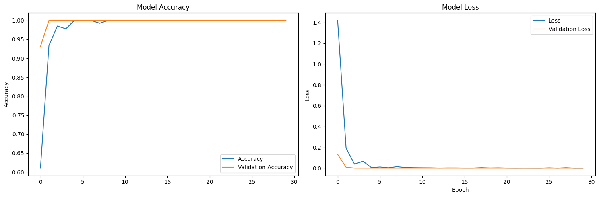
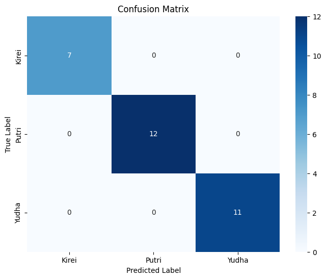
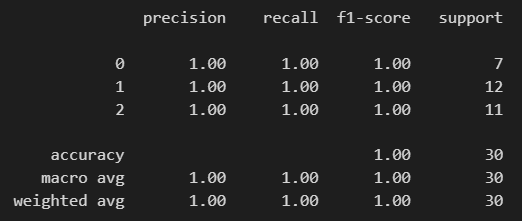
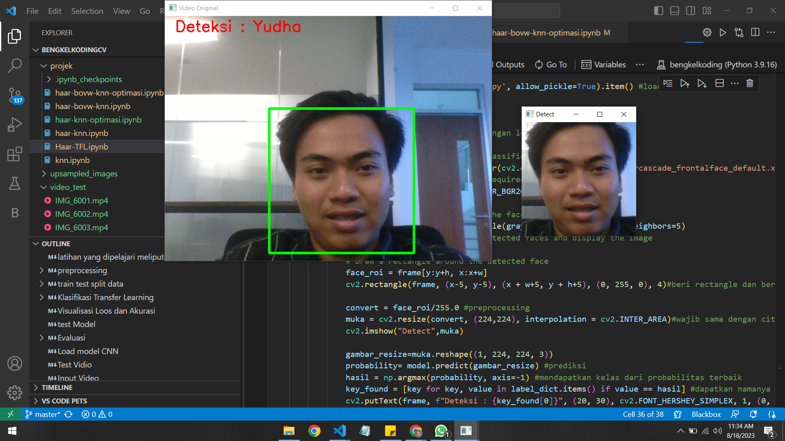
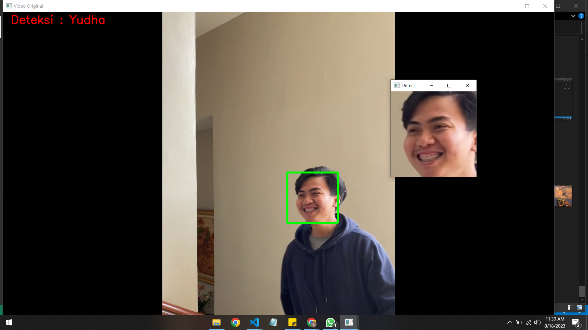

Studi Kasus 4
4 Sistem Deteksi dan Pengenalan Objek Wajah berbasis Transfer Learning (MobileNetV2)
latihan yang dipelajari meliputi:
- preprocessing
- load gambar dalam sebuah folder
- spliting dataset train test
- klasifikasi model evaluasi
Preprocessing
Membaca dan Memberi Label
Membuat Fungsi Haar Cascade
Buat fungsi bernama haar yang berisi perintah untuk melakukan deteksi wajah dari input berupa citra.
def haar(img):
status = False
face_roi = []
# Load Haar Cascade classifier for face detection
face_cascade = cv2.CascadeClassifier(cv2.data.haarcascades + 'haarcascade_frontalface_default.xml')
# Convert the image to grayscale (required for face detection)
gray = cv2.cvtColor(img, cv2.COLOR_BGR2GRAY)
# Detect faces in the image using the face_cascade
faces = face_cascade.detectMultiScale(gray, scaleFactor=1.5, minNeighbors=5)
# Draw bounding boxes around the detected faces and display the image
for (x, y, w, h) in faces:
# Draw a rectangle around the detected face
face_roi = img[y:y+h, x:x+w]
status = True
return status,face_roiMembaca Dataset
#menentukan direktori/folder data citra yang akan dibuka
dirname = '../dataset/'
#menentukan ukuran tinggi dan lebar gambar
height = 224
width = 224
dim = (width, height)
#mengumpulkan data citra yang akan dibuka dalam satu array
tampungan_data= []
tampungan_label=[]
for path, subdirs, files in os.walk(dirname):
print(path)
for name in files:
img_path = (os.path.join(path, name)) #baca path data
if (img_path.endswith("jpg")): #dengan file berekstensi jpg
img = cv2.imread(img_path) #baca gambar
path_parts = path.split('/')
# Mengambil elemen terakhir dari path_parts sebagai kata terakhir
last_word = path_parts[-1]
#preprocessing data / segmentasi boleh dilakukan disini
status, gambar_haar = haar(img)
if(status):
resized=cv2.resize(gambar_haar,dim, interpolation=cv2.INTER_LINEAR) #resize
tampungan_data.append(resized/255.0) #menumpuk gambar blur pada array tampungan dan di sampling
tampungan_label.append(last_word)
X = np.array(tampungan_data)
y = np.array(tampungan_label)
Tip
Penjelasan Kode
- Inisialisasi folder dataset kedalam folder dirname
- Inisialisasi tinggi dan lebar citra yang nantinya akan digunakan untuk merubah ukuran citra
- Deklarasikan tampungan_data dan tampungan_label sebagai list kosong
- Akses file yang berada pada folder dataset menggunakan fungsi os.walk
- Deteksi wajah yang terdapat pada citra kemudian ubah ukuran gambar
- Simpan citra hasil preprocessing kedalam list tampungan_data dan simpan label dari citra kedalam tampungan_label
import seaborn as sns
list_label=np.unique(y) #mendapatkan label unik
label_dict = {label: idx for idx, label in enumerate(list_label)} #masukkan dalam list
print(label_dict)
label_numerik = [label_dict[s] for s in y] #ubah kedalam numerik
label_numerik_array = np.array(label_numerik)
# Visualisasikan dalam jumlah dalam plot
sns.countplot(x=label_numerik_array)
plt.xlabel('Numeric Labels')
plt.ylabel('Count')
plt.title('Count Plot for Numeric Labels')
plt.show()
# simpan dalam file npy untuk labeling
np.save('../weight/label_knn.npy', label_dict)
Tampilkan Hasil Preprocessing
import numpy as np
import matplotlib.pyplot as plt
# Randomly select 6 indices from the data
random_indices = np.random.choice(len(X), 6, replace=False)
# Plot the images
plt.figure(figsize=(12, 8))
for i, idx in enumerate(random_indices):
plt.subplot(2, 3, i+1)
plt.imshow(X[idx])
plt.title("Label: " + str(y[idx]))
plt.tight_layout()
plt.show()Train Test Split Data
from sklearn.model_selection import train_test_split #library untuk train test split
#melakukan splitting data
# First, split data into train and temp sets (70% train, 30% temp)
X_train, X_temp, y_train, y_temp = train_test_split(X, label_numerik_array, test_size=0.3, random_state=42, stratify=label_numerik_array)
# Next, split the temp set into validation and test sets (50% validation, 50% test)
X_val, X_test, y_val, y_test = train_test_split(X_temp, y_temp, test_size=0.5, random_state=42, stratify=y_temp)
# Print the sizes of each set
print("Train set:", X_train.shape, y_train.shape)
print("Validation set:", X_val.shape, y_val.shape)
print("Test set:", X_test.shape, y_test.shape)Klasifikasi Menggunakan Transfer Learning (MobileNetV2)
Flow Klasifikasi


Train Model CNN
import tensorflow as tf
import keras
from tensorflow.keras.applications import MobileNetV2 as Mdl
from keras.callbacks import ModelCheckpoint, EarlyStopping
from tensorflow.keras.models import Model
def mobilenet(img_height,img_width, channel):
base_model = Mdl(weights="imagenet", include_top=False, input_shape=(img_height,img_width, channel)) #model TF IMAGENET
for layer in base_model.layers: #FREEZ ALL LAYER karena tfl
layer.trainable = False
model= tf.keras.Sequential()
model.add(base_model) #tambahkan beberapa layer
x = model.output
x = tf.keras.layers.Flatten()(x)
x = tf.keras.layers.Dense(64, activation='relu')(x)
x = tf.keras.layers.Dropout(0.5)(x)
predictions = tf.keras.layers.Dense(3, activation="softmax")(x) #softmax untuk multiclass
model = Model(inputs=model.input, outputs=predictions)
return model
model=mobilenet(224,224, 3).summary() #tampilkan bentuk arsitekturnya tf.keras.backend.clear_session() #hapus cache keras
model = mobilenet(224,224,3) #panggil model
model.compile(optimizer=tf.optimizers.Adam(learning_rate=0.0001),loss='sparse_categorical_crossentropy', metrics = ['accuracy']) #compile model
callbacks = [ModelCheckpoint(f"../weight/best_weight.h5", monitor='val_loss', save_best_only=True)] #simpan model
history = model.fit(X_train,y_train,validation_data=(X_val,y_val), batch_size=32, epochs=30,
verbose=0, callbacks=callbacks, workers=-1) #train modelVisualisasi Loss dan Akurasi
import matplotlib.pyplot as plt
# Plot grafik kiri
plt.figure(figsize=(15, 5))
plt.subplot(1, 2, 1)
plt.plot(history.history['accuracy'])
plt.plot(history.history['val_accuracy'])
plt.title("Model Accuracy")
plt.ylabel("Accuracy")
plt.legend(["Accuracy", "Validation Accuracy"])
# Plot grafik kanan
plt.subplot(1, 2, 2)
plt.plot(history.history['loss'])
plt.plot(history.history['val_loss'])
plt.title("Model Loss")
plt.ylabel("Loss")
plt.xlabel("Epoch")
plt.legend(["Loss", "Validation Loss"])
plt.tight_layout()
# Simpan gambar ke file
plt.show()
Test Model
y_pred = model.predict(X_test, batch_size=1) #test modelEvaluasi
Confusion Matrix
from sklearn.metrics import classification_report, confusion_matrix
multiclass_predictions = np.argmax(y_pred, axis=1) #proses probabilitas
cm = confusion_matrix(multiclass_predictions, y_test)#plot cm
plt.figure(figsize=(8, 6))
sns.heatmap(cm, annot=True, fmt="d", cmap="Blues", xticklabels=label_dict, yticklabels=label_dict)
plt.xlabel("Predicted Label")
plt.ylabel("True Label")
plt.title("Confusion Matrix")
plt.show()
Performance
report = classification_report(multiclass_predictions, y_test)
print(report)
Note
Baca kembali penjelasan mengenai parameter-parameter pada classification_report di Studi_Kasus_2
Uji testing data baru
import matplotlib.pyplot as plt
import cv2
import os
import os.path
import numpy as np
url= '../dataset/Yudha/IMG_4828.jpg'
img=cv2.imread(url)
plt.figure()
plt.title("Data Test")
plt.imshow(cv2.cvtColor(img, cv2.COLOR_BGR2RGB))
plt.show()
#pastikan langkah preprocessing yang dilakukan sama dengan data train
status,haarnya=haar(img)
convert = haarnya/255.0
img_resize = cv2.resize(convert,(224,224))
#tampilkan hasil
plt.figure()
plt.title("Hasil preprocessing")
plt.imshow(img_resize)
plt.show()
test = img_resize.reshape((1, 224, 224, 3))
print(f"ukuran gambar test {test.shape}") #sama dengan input shape
# Mengecek hasil klasifikasi pada salah satu dataset
probability=model.predict(test)
print(f"nilai probabilitas {probability}") #tampilkan nilai probabilitas tiap kelas
for ind,val in enumerate(label_dict): #mendapatkan nama kelas dan hasil akurasi
print(f'{val} = {probability[0][ind]*100}%')
hasil = np.argmax(probability, axis=-1) #mendapatkan kelas dari probabilitas terbaik
key_found = [key for key, value in label_dict.items() if value == hasil] #dapatkan namanya
print(f"prediksinya: {key_found}")
print(f"The predicted image is : {str(hasil)} -> {key_found}")

ukuran gambar test (1, 224, 224, 3)
nilai probabilitas [[4.8450978e-08 9.5532369e-07 9.9999905e-01]]
Kirei = 4.845097834049739e-06%
Putri = 9.553236850479152e-05%
Yudha = 99.99990463256836%
prediksinya: [‘Yudha’]
The predicted image is : [2] -> [‘Yudha’]
Load Model CNN
from tensorflow.keras.models import load_model
# Load the model
model_path ='../weight/best_weight.h5'
model = load_model(model_path)Test Video
Secara Realtime
import cv2
import os
import os.path
import numpy as np
from time import sleep
import pickle
color = (255, 0, 0)
cap = cv2.VideoCapture(0) # 0 jika kamera
label_dict = np.load('../weight/label_knn.npy', allow_pickle=True).item() #load label
while (cap.isOpened()):
ret , frame = cap.read() #baca vidio dengan looping gambar
if ret:
face_roi = []# Load Haar Cascade classifier for face detection
face_cascade = cv2.CascadeClassifier(cv2.data.haarcascades + 'haarcascade_frontalface_default.xml')
# Convert the image to grayscale (required for face detection)
gray = cv2.cvtColor(frame, cv2.COLOR_BGR2GRAY)
# Detect faces in the image using the face_cascade
faces = face_cascade.detectMultiScale(gray, scaleFactor=1.5, minNeighbors=5)
# Draw bounding boxes around the detected faces and display the image
for (x, y, w, h) in faces:
# Draw a rectangle around the detected face
face_roi = frame[y:y+h, x:x+w]
cv2.rectangle(frame, (x-5, y-5), (x + w+5, y + h+5), (0, 255, 0), 4)#beri rectangle dan beri overlap sebesar 5
convert = face_roi/255.0 #preprocessing
muka = cv2.resize(convert, (224,224), interpolation = cv2.INTER_AREA)#wajib sama dengan citra inputan trainer
cv2.imshow("Detect",muka)
gambar_resize=muka.reshape((1, 224, 224, 3))
probability= model.predict(gambar_resize) #prediksi
hasil = np.argmax(probability, axis=-1) #mendapatkan kelas dari probabilitas terbaik
key_found = [key for key, value in label_dict.items() if value == hasil] #dapatkan namanya
cv2.putText(frame, f"Deteksi : {key_found[0]}", (20, 30), cv2.FONT_HERSHEY_SIMPLEX, 1, (0, 0, 255),2)
cv2.imshow("Detect",muka)
cv2.imshow("Video Original" , frame)
else:
print('no video')
cap.set(cv2.CAP_PROP_POS_FRAMES, 0)
continue
if cv2.waitKey(1) & 0xFF == ord('q'):
break
cap.release()
cv2.destroyAllWindows()
cv2.waitKey(1)
Menggunakan Input Video
import cv2
import numpy as np
color = (255, 0, 0)
video_path = input("Masukkan path video: ") # Memasukkan path video secara manual
cap = cv2.VideoCapture(video_path) # Membaca video dari file
label_dict = np.load('../weight/label_knn.npy', allow_pickle=True).item() # Load label
while cap.isOpened():
ret, frame = cap.read() # Baca frame video
if ret:
face_roi = [] # Load Haar Cascade classifier for face detection
face_cascade = cv2.CascadeClassifier(cv2.data.haarcascades + 'haarcascade_frontalface_default.xml')
# Convert the image to grayscale (required for face detection)
gray = cv2.cvtColor(frame, cv2.COLOR_BGR2GRAY)
# Detect faces in the image using the face_cascade
faces = face_cascade.detectMultiScale(gray, scaleFactor=1.5, minNeighbors=5)
# Draw bounding boxes around the detected faces and display the image
for (x, y, w, h) in faces:
# Draw a rectangle around the detected face
face_roi = frame[y:y+h, x:x+w]
cv2.rectangle(frame, (x-5, y-5), (x + w+5, y + h+5), (0, 255, 0), 4) # Beri rectangle dan beri overlap sebesar 5
convert = face_roi/255.0 # Preprocessing
muka = cv2.resize(convert, (224, 224), interpolation=cv2.INTER_AREA) # Wajib sama dengan citra inputan trainer
cv2.imshow("Detect", muka)
gambar_resize = muka.reshape((1, 224, 224, 3))
probability = model.predict(gambar_resize) # Prediksi
hasil = np.argmax(probability, axis=-1) # Mendapatkan kelas dari probabilitas terbaik
key_found = [key for key, value in label_dict.items() if value == hasil] # Dapatkan namanya
cv2.putText(frame, f"Deteksi : {key_found[0]}", (20, 30), cv2.FONT_HERSHEY_SIMPLEX, 1, (0, 0, 255), 2)
cv2.imshow("Detect", muka)
cv2.imshow("Video Original", frame)
else:
print('Tidak ada video')
cap.set(cv2.CAP_PROP_POS_FRAMES, 0)
continue
if cv2.waitKey(1) & 0xFF == ord('q'):
break
cap.release()
cv2.destroyAllWindows()
cv2.waitKey(1)